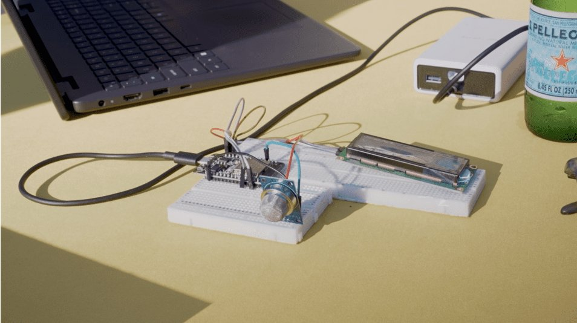

- EEG attention detection (Spring 2026, team project). XGBoost classifier on EEG band-power features from 60 subjects; 64.3% accuracy on engaged vs low-attention states. Repo
- Methane emission monitoring (Spring 2026, Fung Fellowship, team of 4). A $15 household methane sensor built from off-the-shelf parts, shaped by 12 stakeholder interviews with Climate Action California. Findings went to the California Air Resources Board.

The methane team at the Fung Fellowship showcase, Spring 2026. Photo: Fung Institute. 
The sensor prototype on a breadboard. Photo: Fung Institute. - Accessible door entry assistant (2025 to 2026). Handheld RF trigger that presses an ADA automatic-door button for a user with limited mobility.
- Acoustic positioning (Fall 2025, EECS 16A). Locates a microphone in 2D from time differences of arrival, using cross-correlation and least squares.
- Voice command classifier (Fall 2025, EECS 16A). Mel-spectrogram features, PCA and nearest-centroid classification; about 97% on live recordings of one speaker.
About
I study Electrical Engineering and Computer Sciences at UC Berkeley. I started at Cypress College in mathematics and physics, and physics left me with a habit: understand how something works before building it. If I can predict what a circuit or a channel will do, I can tell when a measurement is wrong. That habit is why I lean toward integrated circuits and signal integrity.
My target is IC design, analog and digital, with an interest in high-speed links and RF. Right now I am a product engineering co-op on RF front-end parts at Skyworks, I volunteer on a community solar and storage microgrid in Huron, CA, and I am designing a SAR analog-to-digital converter (successive-approximation ADC), from a Python model and Verilog control logic down to transistor level. Its page goes up once there are simulated results to show.
Outside engineering I hike, take photos and cook.
University of California, Berkeley. B.S. Electrical Engineering and Computer Sciences, expected May 2028.
Cypress College. Associate Degree for Transfer in Mathematics and Physics, 2023 to 2025.
UC Berkeley Fung Fellow, Spring 2026. PEARC26 Student Program participant, TACC. Presenter at SCCUR and the STARS Celebration Conference, 2024.
Skills
Each skill points to the work that shows it.
| Skill | Evidence | Proof |
|---|---|---|
| Link and channel modeling (Python, NumPy, SciPy) | 5 Gb/s SerDes model with FFE, CTLE, DFE and CDR; statistical eye and BER; 43 tests | SerDes link |
| RTL and verification (SystemVerilog, cocotb, Icarus) | PRBS generator, DFE and CDR loop filter checked against the Python model over 2,000 to 4,000 cycles | rtl/ |
| Electromagnetics and signal integrity (C++17) | FDTD solver; reflection, S-parameters and loss checked against theory | FDTD solver |
| PCB design (KiCad) | Controlled-impedance test board, 12 in and 1 in lines, DRC-clean, not yet fabricated | pcb/ |
| Embedded firmware (ESP32-S3, C++, PlatformIO) | On-device audio features and CNN inference; three hardware versions | AccessiSound |
| On-device ML (TensorFlow Lite) | 7,429-parameter CNN, 47 to 53% on 5 classes (chance 20%) | ml/ |
| Mechanical CAD (Fusion 360) | Printable two-shell enclosure with mounting plate | hardware/v2 |
| RF lab instruments | Network and spectrum analyzer characterization of RF amplifier devices | Skyworks co-op |
| Test data tooling (Python, C++, Rust) | Parsers and merge tools for semiconductor test data across several file formats | Skyworks co-op |
| Multi-agent RL and optimization (PyTorch, linear programming) | Three RL methods trained and compared to a baseline; LP task allocation at the 2024 REU | Drone-UGV |
Experience
Product Engineer Co-Op, Skyworks Solutions
- Characterize power amplifier and low-noise amplifier devices at Final Test with network and spectrum analyzers: insertion loss, gain and harmonic distortion.
- Trace yield trends and root causes on high-volume RF front-end products using process capability (Cpk), statistical process control and ANOVA on die, wafer and module test data.
- Build Python tools that merge test results across test types for parameter review, and maintain test-data conversion pipelines in Python, C++ and Rust.
Volunteer Electrical Engineer, The LEAP Institute
- Electrical engineering support for a community-led solar, battery storage and EV charging microgrid serving a farmworker community, with graduate students at UCLA and USF.
- Reviewed concept papers, budgets and a community survey (33 residents, 24 vendors) to find the main electrical loads: refrigerated storage, a cooling center, a commissary kitchen, and event lighting and stage power.
- Found that six planned DC fast chargers conflict with the net zero goal, and raised it so the team could define where the net zero boundary sits.
Electrical Subteam, Underwater Robotics
- Study power dissipation and heat in the NVIDIA Jetson modules that run the team’s autonomous underwater robots.
- Support power regulation, integration and debugging across 16 onboard sensors and actuators.
Summer Researcher, NSF REU at TACC
- Formulated multi-robot task allocation as a linear program that minimizes the largest workload gap across 5 robot types in a simulated disaster grid, run on an HPC cluster.
- Combined it with a fairness-weighted learning reward (FE-MADDPG) to improve task-distribution efficiency by 70% over the baseline. This work is the origin of the Drone-UGV project.
Physics Tutor
- Wrote Python and Jupyter simulations for electromagnetism and thermodynamics across 40+ tutoring hours, contributing to a 20% average gain in student exam scores.
Resume
Contact
Open to Summer 2027 internships in IC design, signal integrity and hardware engineering.
jack_pham@berkeley.edu · LinkedIn · GitHub